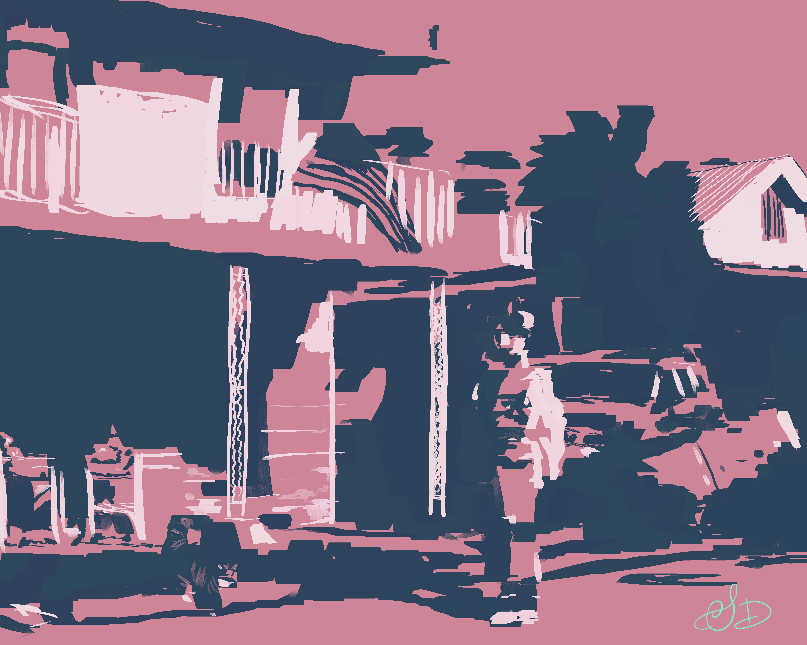

Project 3 Step 4: Aftermath
Aftermath process video (Speedpaint)
Aftermath explores the dichotomy of embodiment vs. disembodiment within the context of the devastating aftermath of a hurricane. The figure to the right, hugging themselves, serves as a symbol of human vulnerability, representing the grounding experience of embodiment by existing as a living, feeling person in a disaster-stricken landscape. The damage from the hurricane, as seen in the pile of debris and waste, suggests disembodiment in a chaotic environment where the world seems fragmented and uncertain. The house on the left has been literally disembodied: its flood-damaged contents removed and piled beside it. An American flag stands is positioned on the front of the house, giving an idea of place and symbolizing the will of a community to rise above a disaster. The cat, a small companion, is injured on his head but pays no mind to his condition. He offers a sense of serenity as one accepts the state of disaster around them.
The juxtaposition of embodiment and disembodiment is further seen in the impressionist style of the brushwork. The shapes are loose and bear a painterly texture, suggesting that the structures in this environment are not as loose as they seem. Blocks of color mark the abstracted three-dimensionality of figures and structures, while smaller scribbly strokes denote the ambiguous mounds of debris and damage. The split-complementary color palette evokes serenity and warmth amid melancholy and sadness.
This piece reflects on the turmoil and tension of living in a place where nature can so easily rip everything apart, taking you and everything you know and love with it. Although inspired by the events of Hurricane Helene in Cedar Key, FL, this piece is more so about the broader sublimity of nature’s power. A hurricane’s destruction embodies this power while also giving way to disembodiment in the form of disruption of the physical and perceived stability of a community.
Project 3 Step 3: Adjust Values
Project 3 Step 2: Value Blocking


Project 3 Step 1: Composite Image